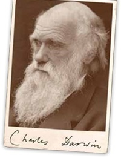

In het verleden waren, zoals hiervoor al
geschreven, de filosofie en de kunst een onderdeel van het grotere
'wetenschap'. Vanuit een intuïtief en diep weten dat 'de mens'
zo veel meer was dan alleen zijn stoffelijke verschijning, was het
begrijpelijk en uiterst leerzaam dat empirisme, filosofie, kunst en
religie naast elkaar en door elkaar heen bestonden. En hoe meer de
mens meende zichzelf en zijn wereld te begrijpen, hoe meer de
verhoudingen tussen die verschillende onderdelen van de wereld van
de mens veranderden. En uiteindelijk is de dominante religie in het
westen 'de wetenschap' geworden die als hoofddogma belijdt dat als
er geen belletje gaat branden of lampje gaat rinkelen 'het' dus
'wetenschappelijk' niet bestaat, waarmee meteen ook geen
concurrerend geloofsstelsel meer bestaat: "Ik getuig dat (er) geen
godheid is (dan) alleen Wetenschap en ik getuig dat De
Wetenschapper zijn boodschapper is". Amen.
Binnen die wetenschap is er slechts één
definitie van 'de mens' mogelijk, en dat is de mens in zijn
stoffelijk voorkomen, waartoe wij (de wetenschap) inmiddels ook
elektrische en/of magnetische energie rekenen, voor zover de
wetenschap deze kan verklaren, anders bestaat ook die niet. De mens
is een product van evolutie en een kettingreactie van DNA. De
Wikipedia geeft de strekking én de beperking van het wezen
'mens' treffend weer:
“Mens of (wetenschappelijke naam) Homo
sapiens (Latijn: verstandige of wijze mens) is een tweevoetige
primatensoort uit de familie Hominidae. Onderzoek naar DNA wijst
erop dat de moderne mens ongeveer 200.000 jaar geleden in Afrika
ontstaan is als soort. De mens heeft zeer goed ontwikkelde
hersenen, waarmee hij in staat is tot abstract nadenken, taal,
introspectie, probleemoplossing en emotie. Dankzij zijn
intelligentie en rechtopstaande houding, waardoor de armen vrij
zijn om voorwerpen op te pakken en te bewerken, is de mens veel
meer dan andere soorten in staat gereedschappen te gebruiken. De
mens is over de hele wereld verspreid en op alle continenten
behalve Antarctica komen grote populaties voor. In juli 2008 was
het totale aantal mensen op Aarde groter dan 6,7 miljard[4]
individuen, eind oktober 2011 telde de Aarde een totaal van 7
miljard levende mensen. Er is slechts één nog levende
ondersoort en dat is Homo sapiens sapiens. Mensen zijn, evenals de
meeste andere primaten, sociaal van aard. Ze zijn bijzonder
bedreven in het gebruik van communicatiemiddelen voor
zelfexpressie, uitwisseling van ideeën en organisatie. Mensen
creëren complexe sociale structuren, die bestaan uit talrijke
samenwerkende en concurrerende groepen, die uiteenlopen van
families tot naties. Sociale interacties tussen mensen hebben een
grote variëteit aan tradities, rituelen, ethiek, normen,
waarden, en wetten tot stand gebracht, die samen de basis vormen
voor de menselijke samenleving.”
In zijn publicatie "The Descent of Man" schrijft
Darwin in 1871 (vol. 1, pag. 105): "... het verschil in geest tussen de mens en de
hogere dieren, hoe groot het ook is, is zeker een van graad en niet
van aard. We hebben gezien dat de zintuigen en intuïtie, de
verschillende emoties en vermogens zoals liefde, geheugen,
aandacht, nieuwsgierigheid, imitatie, reden, etc., waarover de mens
beschikt, kan worden gevonden in een beginnende, of soms zelfs in
een goed ontwikkelde toestand, in de lagere dieren. Ze zijn ook in
staat tot sommige erfelijke verbetering, zoals we zien in de
gedomesticeerde hond vergeleken met de wolf of
jakhals."

In 2001 schreef Jacques Derrida (ook wel 'de
beroemdste filosoof van onze tijd' genoemd) "Geen van de eigenschappen waarmee de meest
erkende filosofie of cultuur het mogelijk heeft gedacht te erkennen
dat dit 'de echte mens' is - geen van hen is, in alle strengheid,
de exclusieve reserve van wat wij mensen mens noemen. Hetzij omdat
sommige dieren ook beschikken over deze eigenschappen, of omdat de
mens deze niet zo zeker bezit als wordt
beweerd."
Friedrich Nietzsche schrijft hierover (in 'Also
sprach Zarathustra') "Jullie hebben de weg afgelegd van worm tot
mens en veel in jullie is nog worm. Eens waren jullie apen en ook
nu nog is de mens meer een aap dan willekeurig welke
aap."
Kortom, de consensus tussen wetenschap en
filosofie is: wij zijn apen. Primaten. Maar wel de
‘slimste’. En we zijn de aap die tot de allergrootste
beestachtigheid in staat is, dat ook. Dat het zijn van 'de slimste'
en 'de beestachtigste' aan elkaar is verbonden biedt een essentieel
inzicht in de gerichtheid van de mens. Het hart is immers wat alle
dieren met elkaar gemeen hebben. Er zijn twee belangwekkende
verschillen met alle andere dieren in ons dierenrijk: #1 het
mensdier is dankzij het meest uitgebreide bovenbrein in staat de
meest slimme onder alle dieren te zijn. En #2 dankzij de rationele
vermogens van dat grote bovenbrein is het mensdier het best in
staat rationeel te handelen, en haar handelen extreem te
rationaliseren, en daardoor harteloos te handelen. Daarover schreef
Immanuel Kant (Kant: Anthropology from a Pragmatic Point of View, P
226): "De mens is duidelijk
onderscheiden van alle andere levende wezens door (#1) zijn
technische aanleg voor het manipuleren van dingen (mechanisch
gecombineerd met bewustzijn), door (#2) zijn pragmatische aanleg
(om andere mensen vakkundig te gebruiken voor zijn doeleinden), en
(#3) door de morele aanleg in zijn wezen (om zichzelf en anderen te
behandelen volgens het principe van de vrijheid onder de
wetten)."
Volgens het geconstrueerde denken vanuit de
moderne materialistische neurowetenschappen zijn we gedoemd 'ons
brein' te zijn; te volgen. Ultiem de rationele createur, de 'super
aap'. We identificeren ons met het gereedschap dat ons bovenbrein
is. Dan heb je geen intuïtie, geen spiritualiteit, een
empathie meer nodig: het gaat hier vooral om het overleven van de
ego. En om het berekenen daarvan. Het egoloze hart is echter altijd
beschikbaar en als het leven al enig doel heeft dan is het wellicht
om dat hart (weer) de leiding te geven.
“Geluk is de dood van het
ego.”
~Osho
Er bestaat al langere tijd een 'neuromythe' die
mensen verdeelt in rechterbrein- en linkerbrein (gedomineerde)
mensen. Mede dankzij het werk van Swaab c.s. weten we dat deze
opdeling feitelijk niet helemaal klopt: bij logische inspanningen
én bij creatieve inspanningen zijn in beide hersenhelften
onderdelen actief en hetzelfde geldt voor taal, analyseren,
visualiseren etc. De wijdverspreide kennis over de opdeling van
mensen in dominante hersenhelften is, alweer, vooral een gevolg van
het zoeken van de oorzaak van een fenomeen (alleen) in de
hersenen.
Prof. Lex Cools was sinds 1984 hoogleraar
Farmacologie van de Radboud Universiteit en later hoofd van de
afdeling Psychoneurofarmacologie (1997-2004). Hij was
gespecialiseerd in o.a. neurobiologische
anti-Parkinsonmiddelen.
Cools bestreed zeker ook het veronderstelde
simpele verschil tussen linker- en rechterbrein (mensen) maar
ontdekte en onderkende wel degelijk een tweetal fundamenteel
verschillende processen in het verwerken van gegevens door
hersenen, die hij 'Deep Blue' en 'Kasparov' noemde*. Volgens Cools
geven 'Deep Blue' en 'Kasparov' de twee verschillende manieren aan
waarop hersenen bepaalde uitdagingen verwerken, de processen in de
hersenen dus, en toch wel degelijk dat er 'twee typen mensen zijn',
neurologisch dus. Tussen zijn uitleg van deze processen en de
neuromythe over linker- en rechterbrein benaderingen zie ik grote
overeenkomsten.
Er zijn twee centra in de hersenen die een
bepalende rol spelen in de twee algemene 'soorten' van afhandeling
van zaken, vergelijkbaar met de linker- en rechterhelft discussie
en waar neuroloog Cools met 'Deep Blue' en 'Kasparov' op doelde.
Dat zijn de nucleus
caudatus en
de nucleus
accumbens. Het blad The
Journal of Neuroscience publiceerde op 5 september 2012 de
onderzoeksresultaten van de Universiteit van Amsterdam**. In dat
artikel wordt de nucleus caudatus beschreven als "de schakel tussen verlangen
naar iets en het daadwerkelijk doen". Volgens de Amsterdamse
wetenschappers "zorgt de nucleus accumbens ervoor dat mensen
verlangen en passie ervaren, maar deze hersenstructuur blijkt niet
in verbinding te staan met het handelgedeelte van de
hersenen."
De overeenkomsten in de concepten achter de
linker hersenhelft, Deep Blue en de Nucleus Accumbens werpen
lichten op een bepaald voorspelbaar en 'automatisch' en vooraf
bepaald 'standaard' gedrag van mensen. Dergelijke mensen noem
ik Hoofdmensen. Pas wanneer daaraan de dimensies van het hart
worden toegevoegd(!) ontstaan Hartmensen. Hartmensen zijn dus ook bewuste, dus
niet-automatische, Hoofdmensen. Hoofdmensen zijn nooit (ook)
Hartmensen.
___________________________________________
* IBM-computer Deep Blue versloeg
schaakgrootmeester Garry Kasparov in 1996 bij het
schaken
** Carien S. Lansink, Jadin C. Jackson, Jan V.
Lankelma, Rutsuko Ito, Trevor W. Robbins, Barry J. Everitt, Cyriel
M.A. Pennartz: Reward cues in space: commonalities and differences
in neural coding by hippocampal and ventral striatal ensembles.
Journal of Neuroscience (5 september 2012).